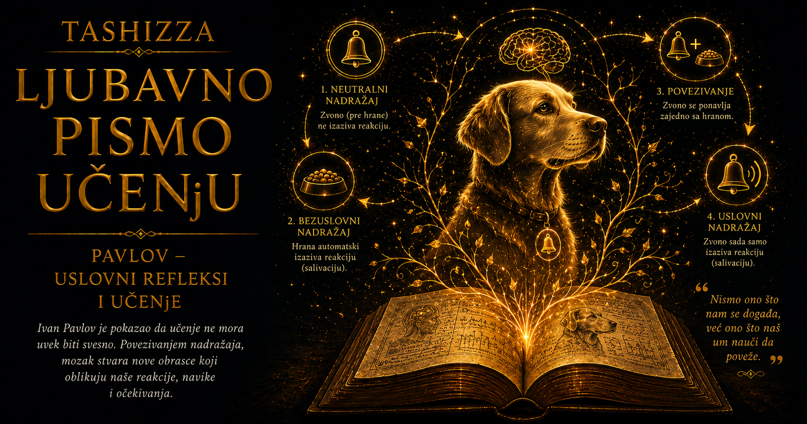

Ljubavno pismo učenju

Mnogo pre nego što je nauka počela da meri učenje, ljudi su poznavali njegove posledice. Dete se umirivalo uz poznatu uspavanku, konj se zaustavljao na pokret uzde, vojnik je reagovao na zvuk trube, a miris hrane budio je glad pre prvog zalogaja. Svakodnevni jezik govorio je o iskustvu, pamćenju, dresuri, običaju, disciplini i karakteru, ali iza tih reči ostajalo je otvoreno pitanje: kako događaj koji je nekada bio beznačajan stiče moć da pokrene očekivanje, osećanje ili telesnu reakciju?
U devetnaestom veku proučavanje ponašanja nalazilo se između nekoliko naučnih oblasti. Filozofi su razmatrali predstave i asocijacije u svesti, fiziolozi su istraživali nerve, čula i reflekse, dok su pedagozi i dreseri vekovima koristili ponavljanje, nagrade i ustaljene znakove. Refleks se uglavnom shvatao kao urođena i neposredna reakcija organizma: svetlost sužava zenicu, vrela površina povlači ruku, a hrana pokreće lučenje pljuvačke. Iskustvo je pripadalo svetu psihičkog života, dok je refleks pripadao telu. Ivan Pavlov otvorio je istraživački prolaz između ta dva sveta.
Pitanje koje je proizašlo iz njegovog rada bilo je jednostavno, a posledice dalekosežne: može li iskustvo izgraditi novu refleksnu vezu? Može li zvuk, prizor, miris ili dodir steći sposobnost da pokrene reakciju koja mu po prirodi ne pripada? Potvrdan odgovor otkrivao je ogromno područje između urođenih refleksa i promišljenih odluka — područje naučenih očekivanja, telesnih priprema i automatskih odgovora koji se grade kroz ponavljanje.
Pavlov do tog pitanja nije stigao proučavajući navike u svakodnevnom smislu. Bio je fiziolog posvećen istraživanju varenja, radu digestivnih žlezda i ulozi nervnog sistema u njihovom usklađivanju. Pljuvačka je u njegovoj laboratoriji bila merljiv fiziološki događaj: mogla se prikupljati, količinski izražavati i povezivati sa tačno određenim uslovima. Uredno postavljen eksperiment, međutim, počeo je da daje rezultate koji se nisu uklapali u početni plan. Psi su lučili pljuvačku pre nego što bi hrana dospela u usta — pri pogledu na posudu, zvuku koraka osobe koja ih hrani ili drugim znacima koji su tokom vremena postali povezani sa obrokom.
Ono što je u istraživanju varenja izgledalo kao smetnja postalo je ulaz u novu nauku o učenju. Pavlov je mogao da takve reakcije proglasi eksperimentalnim šumom i pokuša da ih ukloni. Umesto toga, zapitao se pod kojim uslovima jedan signal stiče moć da pokrene telesni odgovor, koliko ta veza traje, kako slabi i na koji način se može vratiti. Neočekivana kap pljuvačke pokazala je da organizam reaguje i na značenje događaja, odnosno na ono što je kroz iskustvo naučio da očekuje.
Osnovni obrazac kasnije nazvan klasičnim ili Pavlovljevim uslovljavanjem može se opisati jasnim sledom. Hrana prirodno izaziva lučenje pljuvačke. Zvuk metronoma, svetlosni signal ili dodir u početku nemaju takvo dejstvo. Kada se neki od tih signala dovoljno pouzdano pojavljuje neposredno pre hrane, životinja postepeno počinje da reaguje već na njegovu pojavu. Signal time postaje najava budućeg događaja, a telo započinje pripremu pre nego što hrana stigne.
Pavlov je govorio o uslovnom refleksu, naglašavajući da reakcija zavisi od određenih uslova i da se menja zajedno sa njima. U mnogim jezicima učvrstio se izraz „uslovljeni refleks”, koji može zazvučati kao jednom zauvek oblikovana veza. Pavlovljevi ogledi pokazivali su mnogo dinamičniju pojavu. Naučeni odgovor traje dok iskustvo potvrđuje odnos između signala i ishoda; kada signal prestane pouzdano da najavljuje očekivani događaj, reakcija postepeno slabi.
Popularna kultura sačuvala je sliku psa koji čuje zvono i počinje da luči pljuvačku. Stvarna Pavlovljeva laboratorija bila je znatno raznovrsnija. U eksperimentima su korišćeni metronomi, zujalice, različiti tonovi, svetlosni podsticaji, dodiri i drugi pažljivo kontrolisani signali. Njihova jačina, trajanje, redosled i vremenski odnos prema hrani mogli su se sistematski menjati. Čuveno zvono zauzima mnogo veće mesto u kasnijim ilustracijama nego u svakodnevici njegovih istraživanja; naučni smisao nalazio se u pouzdanosti najave, a ne u predmetu koji proizvodi zvuk.
U tom odnosu između znaka i onoga što sledi nalazi se pravi intelektualni preokret. Organizam ne čeka pasivno da se važan događaj pojavi, već neprestano uči šta ga najavljuje. Zvuk koraka može označiti dolazak hrane, miris bolnice neprijatan zahvat, određena melodija davno osećanje, a način na koji neko izgovara naše ime predstojeći sukob ili bliskost. Iskustvo pretvara okolinu u mrežu znakova, dok se telo prilagođava njihovom značenju i verovatnoći.
Sposobnost predviđanja ima veliku biološku vrednost. Životinja koja reaguje tek kada opasnost stigne može zakasniti da se zaštiti, dok ona koja prepoznaje rani znak dobija dragoceno vreme za pripremu. Isto načelo važi za pronalaženje hrane, skloništa, partnera i društvene sigurnosti. Uslovni refleks omogućava organizmu da sadašnjost upotrebi kao najavu budućnosti. Iskustvo tako postaje unutrašnji sistem predviđanja.
Snaga naučene veze zavisi od rasporeda događaja i pouzdanosti signala. Jasan podsticaj koji redovno najavljuje važan ishod lakše stiče značenje od podsticaja posle kojeg se ishod pojavljuje nepredvidljivo. Kada se signal ponavlja bez onoga što je ranije najavljivao, dolazi do gašenja uslovnog odgovora. Organizam postepeno prestaje da ulaže istu pripremu u znak koji je izgubio prediktivnu vrednost.
Gašenje ne mora značiti potpuno brisanje prethodnog učenja. Oslabljena reakcija može se delimično vratiti nakon odmora, pod stresom ili pri povratku u okruženje u kojem je prvobitno nastala. Savremena istraživanja pokazuju da se tokom gašenja često gradi novo značenje signala: organizam uči da u sadašnjim okolnostima očekivani ishod izostaje, dok stara veza može ostati sačuvana. Zbog toga strah koji je savladan u sigurnoj ordinaciji ponekad ponovo oživi u drugačijem prostoru, a nekadašnja žudnja može iznenada da se vrati pri susretu sa poznatim mestom ili ritualom.
Pavlov je proučavao i generalizaciju i razlikovanje signala. Kada jedan ton najavljuje hranu, životinja u početku može reagovati i na njemu slične tonove. Takvo širenje odgovora omogućava snalaženje u svetu koji se nikada ne ponavlja u potpuno istom obliku. Daljim iskustvom organizam može naučiti da samo jedan signal ima određeno značenje, dok ga drugi nemaju. Korisna sposobnost generalizacije može postati teret kada se raširi previše: neprijatan susret sa jednim psom može izazvati strah od svih pasa, pa i od prostora, zvukova ili pokreta koji samo podsećaju na prvobitni događaj.
Naslov „kako nastaju navike” zahteva važnu preciznost, jer klasično uslovljavanje objašnjava jedan od temelja navike, a ne njen celokupan nastanak. Ono pokazuje kako znakovi stiču sposobnost da pokrenu očekivanje, pažnju, žudnju ili telesnu spremnost. Navika u savremenom značenju često uključuje i radnju koja se ponavljanjem vezuje za određenu situaciju: posezanje za telefonom posle obaveštenja, pripremanje kafe nakon buđenja ili vezivanje pojasa čim sednemo u automobil. U takvim obrascima učestvuje i učenje na osnovu posledica sopstvenih postupaka.
Razlika između klasičnog i operantnog učenja zato je značajna. U Pavlovljevom obrascu organizam uči odnos između događaja: signal najavljuje hranu, opasnost, prijatnost ili neki drugi ishod. U operantnom učenju, koje su sistematski istraživali Edvard Torndajk, B. F. Skiner i drugi naučnici, organizam uči odnos između sopstvenog postupka i njegove posledice. U svakodnevnom ponašanju ova dva procesa često se prepliću. Miris pekare može probuditi očekivanje prijatnog ukusa, dok kupovina i jedenje peciva stvaraju postupak čija posledica učvršćuje buduće ponašanje.
Pavlovljeva metoda ponudila je mladoj psihologiji mogućnost da učenje proučava kontrolisano, merljivo i ponovljivo. Podsticaj je mogao biti precizno određen, fiziološka reakcija izmerena, a uslovi eksperimenta ponovljeni. Džon Votson i drugi predstavnici biheviorizma preneli su ideju uslovljavanja iz fiziologije u širi program proučavanja ponašanja. U tom prenosu ona je postala mogući model nastanka emocionalnih reakcija, strahova, sklonosti i ustaljenih obrazaca.
Jedan od najpoznatijih ranih pokušaja primene tih načela na čoveka bio je ogled Džona Votsona i Rozali Rejner sa detetom poznatim kao „mali Albert”. Istraživači su pokušali da strah od bele životinje izazovu njenim povezivanjem sa iznenadnim neprijatnim zvukom. Dokumentacija, metodologija i kasnija tumačenja tog slučaja ostali su predmet ozbiljnih rasprava, dok bi sam postupak prema savremenim etičkim standardima bio nedopustiv. Njegovo mesto u istoriji psihologije povezano je sa pretpostavkom da se emocionalni odgovor može naučiti i zatim proširiti na slične podsticaje.
Ista istraživačka tradicija vremenom je otvorila i terapijski put. Naučeni strah može se menjati postepenim, sigurnim iskustvom koje gradi novo očekivanje. Savremene terapije fobija i anksioznih poremećaja daleko su složenije od prvobitnih laboratorijskih obrazaca, ali u tehnikama izlaganja i učenja sigurnosti ostaje prepoznatljivo Pavlovljevo pitanje: kako signal koji je stekao moć da najavi opasnost može dobiti drugačije značenje?
Čovek koji se plaši lifta može razumski znati da je uređaj bezbedan, dok njegovo telo i dalje reaguje ubrzanim pulsom, napetošću i znojenjem. Svesno uverenje i naučena telesna reakcija menjaju se različitom brzinom. Pažljivo izlaganje u podnošljivim i sigurnim uslovima omogućava izgradnju iskustva u kojem lift postepeno gubi značenje nepogrešive najave katastrofe. Ovaj primer pokazuje zašto odluka da se čovek više ne plaši često nema neposrednu moć nad reakcijom koja je dugo učena.
Naučeni signali imaju važnu ulogu i u zavisnostima. Prostor u kojem je supstanca korišćena, određeno društvo, muzika, doba dana, emocionalno stanje ili ritual pripreme mogu izazvati žudnju i telesnu spremnost čak i kada supstanca nije prisutna. Oporavak zato obuhvata i razumevanje čitave mreže podsticaja koji su vremenom stekli sposobnost da pokreću očekivanje. Stari znakovi mogu sačuvati svoju moć dugo nakon prekida neposrednog ponašanja.
Srodni procesi pojavljuju se i u medicini. Miris, ukus ili izgled prostorije mogu se povezati sa mučninom tokom terapije, pa kasnije sami izazvati nelagodnost. Ritual lečenja, poverenje i očekivanje olakšanja mogu učestvovati u složenim placebo reakcijama. Takvi nalazi pokazuju koliko tesno sarađuju nervni, endokrini i imunski procesi u organizmu koji pamti odnose među događajima; oni ne osporavaju stvarnost bolesti niti svode telesnu patnju na sugestiju.
Za obrazovanje Pavlovljevo nasleđe ima naročitu težinu. Učionica nikada nije potpuno neutralan prostor. Zvono, nastavnikov ulazak, ton pitanja, izraz lica, način reagovanja na grešku i ponašanje vršnjaka mogu postati signali pažnje, radoznalosti, sigurnosti, napetosti ili stida. Učenik istovremeno usvaja sadržaj lekcije i emocionalno značenje sredine u kojoj mu se znanje nudi. Kada je greška redovno praćena podsmehom ili poniženjem, samo postavljanje pitanja može izazvati blokadu; kada je istraživanje povezano sa dostojanstvom i osećanjem sigurnosti, isti prostor može pokrenuti spremnost za misaoni napor.
Navike u učenju zato se oslanjaju na mnogo više od trenutne snage volje. Stabilno vreme, određeno mesto, pripremljen sto, otvorena sveska ili kratak uvodni ritual mogu postati znaci koji olakšavaju prelazak u radni ritam. Ponavljanje smanjuje broj odluka potrebnih da bi učenje započelo, pa okruženje preuzima deo organizacionog napora. Duboko razumevanje i dalje zahteva povezivanje ideja, postavljanje pitanja, proveru pretpostavki i prenošenje znanja u nove situacije, ali do tih složenijih procesa lakše dolazimo kada početak rada ne zavisi svakoga dana od pregovora sa samim sobom.
Tržišna kultura veoma rano je prepoznala moć naučenih asocijacija. Ambalaža, boje, melodije, mirisi prodajnog prostora i karakteristični zvuci proizvoda povezuju se sa prijatnošću, sigurnošću, prestižom ili pripadanjem. Reklama često okružuje proizvod osećanjima koja će se kasnije javiti čim potrošač ugleda znak određene marke. Ponavljanjem se gradi veza koja može delovati pre nego što započne svesno poređenje kvaliteta, cene i stvarne potrebe.
Digitalna tehnologija umnožila je broj signala koji zahtevaju brzu reakciju. Crvena oznaka na ekranu, vibracija telefona ili kratak zvuk poruke mogu trenutno preusmeriti pažnju zato što su mnogo puta prethodili društvenoj potvrdi, korisnoj informaciji, zabavnom sadržaju ili iznenađenju. Zvučno obaveštenje pokreće očekivanje, a sadržaj koji potom stiže ponekad nagrađuje proveravanje. U tom obrascu Pavlovljevo uslovljavanje sarađuje sa operantnim učenjem, pa se ruka pruža prema telefonu pre nego što je čovek jasno odredio šta želi da uradi.
Tokom druge polovine dvadesetog veka istraživači su pokazali da vremenska blizina dva događaja ne objašnjava celokupno uslovno učenje. Organizam prati koliko prvi događaj pouzdano predviđa drugi. Ako se hrana jednako često pojavljuje i u prisustvu signala i bez njega, signal donosi malo nove informacije, pa učenje može ostati slabo uprkos mnogobrojnim zajedničkim pojavljivanjima.
Robert Reskorla naglasio je prediktivnu prirodu uslovljavanja, dok je Leon Kamin kroz pojavu blokiranja pokazao da novi signal teško stiče značenje kada neki raniji signal već potpuno predviđa ishod. Iz tih istraživanja razvijeni su formalni modeli učenja zasnovani na grešci predviđanja — razlici između očekivanog i onoga što se zaista dogodilo. Reskorla–Vagnerov model opisao je kako iznenađujući ishod snažnije menja očekivanja, dok potpuno predviđen događaj donosi malo novog učenja.
Zamisao o grešci predviđanja kasnije je povezivana sa neuronaukom, računarskim modelima i algoritmima koji unapređuju procene na osnovu razlike između očekivanog i ostvarenog ishoda. Savremena istraživanja ispituju uloge amigdale u mnogim oblicima učenja straha, malog mozga u precizno vremenski usklađenim odgovorima, hipokampusa u učenju konteksta i odnosa, kao i dopaminskih sistema u promeni očekivanja. Pavlovljeva prvobitna objašnjenja moždanih procesa vremenom su prevaziđena, dok je njegov eksperimentalni problem ostao jedan od važnih puteva ka razumevanju mozga koji predviđa.
Kasnija saznanja korigovala su i preterano pojednostavljenu predstavu prema kojoj se na svakom organizmu može oblikovati bilo koji obrazac. Učenje zavisi od biološke pripremljenosti, vrste podsticaja, prethodnog iskustva, pažnje, motivacije, konteksta i evolutivne važnosti događaja. Ukus se, na primer, može povezati sa mučninom čak i kada između njih prođe duže vreme. Neke veze usvajaju se lakše i trajnije od drugih jer su tokom evolucije imale poseban značaj za opstanak.
Ljudsko učenje dodatno obuhvata jezik, simboličko mišljenje, samoposmatranje i kulturu. Strah može nastati neposrednim iskustvom, ali i posmatranjem drugoga, upozorenjem, slikom ili pričom. Čovek može osetiti automatsku reakciju, razmišljati o njenom poreklu, menjati okolinu i svesno vežbati drugačiji odgovor. Uslovljavanje zato pruža važnu mapu jednog sloja ponašanja, dok se celina ljudske ličnosti prostire daleko izvan njenih granica.
Razumevanje naučenih reakcija može služiti manipulaciji, ali može povećati i sposobnost čoveka da prepozna sopstvene obrasce. Napetost pred elektronskim pismom, glad tokom filma, potreba da se proveri telefon ili nelagodnost pri ulasku u određenu prostoriju imaju istoriju koju često ne primećujemo. Neki znak je kroz ponavljanje povezan sa određenim ishodom. Kada tu vezu uočimo, možemo promeniti raspored podsticaja, ukloniti okidač, izgraditi novo iskustvo ili osmisliti okruženje koje podržava željeno ponašanje.
Navika često započinje pre same radnje, u znaku koji priprema organizam za ono što uobičajeno sledi. Osoba koja želi da izgradi novu rutinu može željenu radnju povezati sa stabilnim vremenom, mestom i redosledom događaja. Slabljenje stare navike može zahtevati uklanjanje ili preoblikovanje znakova koji je pokreću. Takve strategije uspevaju kada uzimaju u obzir nagrade, emocije, ciljeve, društveno okruženje i stvarne mogućnosti osobe, jer ponašanje nastaje iz čitavog sistema odnosa, a ne iz jednog izolovanog podsticaja.
Trajna vrednost Pavlovljevog rada nalazi se i u njegovoj metodi. Od pojave koja je remetila eksperiment napravio je precizno istraživačko pitanje. Umesto da se zadovolji tvrdnjom da životinja zna da hrana dolazi, razložio je uslove pod kojima se očekivanje stvara, širi, razlikuje, slabi i ponovo pojavljuje. Učenje je postalo proces čiji se tok može kontrolisano pratiti, a ponašanje pojava otvorena za proveru.
Njegova ideja zatim je prešla granice fiziologije i ušla u psihologiju, psihijatriju, pedagogiju, medicinu, marketing, neuronauku i projektovanje digitalnih proizvoda. Svaka od tih oblasti prilagodila ju je sopstvenim pitanjima, ponekad je pojednostavljujući, a ponekad proširujući njen prvobitni domet. Kroz sve te promene sačuvano je temeljno pitanje: kako događaj koji je nekada bio neutralan postaje znak sposoban da promeni ono što organizam očekuje, oseća i radi?
Pavlov nije ponudio formulu za svaku naviku niti dokaz da se čovek može neograničeno pretvoriti u poslušnu mašinu. Otvorio je eksperimentalni put ka razumevanju načina na koji iskustvo podsticajima daje značenje. Pokazao je da telo pamti redosled sveta, da očekivanje ima fiziološku snagu i da deo svakodnevnog ponašanja započinje pre svesnog odlučivanja.
Svaki put kada nas miris vrati u staro raspoloženje, zvuk poruke prekine misao, poznato mesto olakša koncentraciju ili bezazlen znak probudi davni strah, susrećemo se sa svetom koji je Pavlov učinio vidljivim. Navike tada postaju tragovi ponovljenih odnosa između čoveka i njegovog okruženja. One mogu biti duboke i uporne, ali imaju svoju istoriju, uslove nastanka i mogućnost promene. Upravo u toj mogućnosti nalazi se najdragocenija veza između Pavlovljeve nauke i ljubavi prema učenju: iskustvo nas oblikuje, a novo iskustvo može nastaviti da nas preobražava.